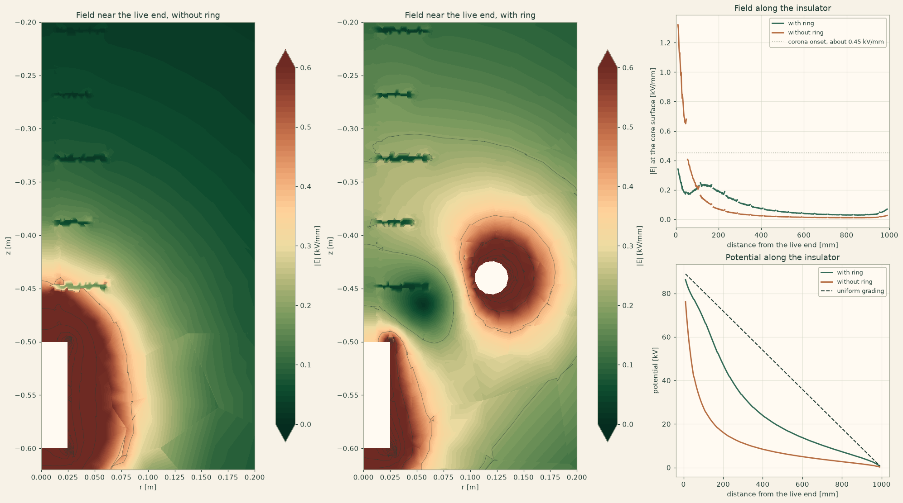
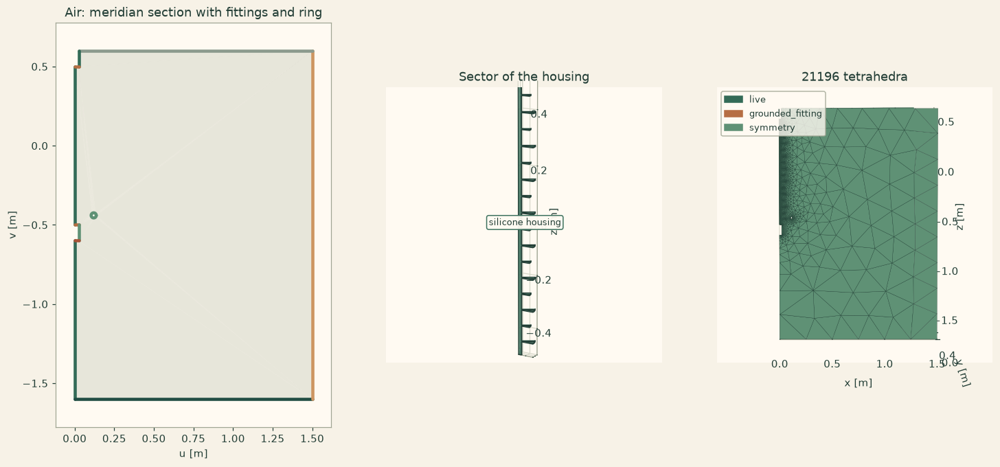

Docs › Examples › Surface field of a high-voltage insulator with a grading ring
Electrostatics · 3D
Surface field of a high-voltage insulator with a grading ring
A 110 kV composite long-rod insulator with and without a grading ring at its live end.
Run locally with OneSimulation. The example downloads are free. Running them requires an activated runtime. The current pilot runs on macOS on Apple Silicon with CPython 3.13. Installation and activation · View pilot plans. Scope of the reference checks.

What it computes
OneSimulation reads a 30-degree sector of the air with fittings and ring and the silicone housing from STEP files, embeds the housing in one tetrahedral mesh and solves the quasi-static potential with quadratic elements and region-wise permittivity. Field and potential along the core show how the ring spreads the voltage over the insulator. The script that builds the STEP file comes with the notebook.
What it checks
The grading ring lowers the peak field at the core surface near the live end from 1.32 to 0.34 kV/mm, below the corona onset of about 0.45 kV/mm, and the share of the voltage across the lowest 100 mm from 69 % to 24 %; the peak field varies by 2.8 % over three meshes (18 000 to 44 000 tetrahedra).
Geometry
The notebook starts at the import of the CAD files high_voltage_insulator_grading_ring.step, high_voltage_insulator_grading_ring_housing.step, high_voltage_insulator_grading_ring_no_ring.step: STEP (AP242), readable by any CAD program, with the names of the faces that the boundary conditions use. Put them next to the notebook.

The geometry script
The script high_voltage_insulator_grading_ring_geometry.py builds the geometry with the CAD objects of OneSimulation and writes the files. Change a dimension there, run it, and run the notebook again.
"""Geometry of the OneSimulation example "Surface field of a high-voltage insulator with a grading ring".
Builds a 30-degree sector of a 110 kV composite long-rod insulator and the air around it with the
CAD objects of OneSimulation. The insulator hangs from a grounded crossarm: a 1 m silicone housing
(core radius 12 mm) with 16 sheds of alternating radius (60 mm and 45 mm), metal end fittings at
both ends, and on the high-voltage end a grading ring (torus, major radius 120 mm, tube radius
16 mm). The modelled sector of the air is a cylinder of 1.5 m radius whose top face is the crossarm.
Files: high_voltage_insulator_grading_ring.step holds the air with fittings and ring cut out, with
the face groups crossarm, live (high-voltage fitting and ring), grounded_fitting, symmetry and
outer; high_voltage_insulator_grading_ring_no_ring.step the same without the ring;
high_voltage_insulator_grading_ring_housing.step holds the sector of the silicone housing.
"""
import numpy as np
from onesim.cad.d3 import Box, Cylinder, Torus
core, length, fitting_radius, fitting_length = 0.012, 1.0, 0.025, 0.10
air_radius, air_bottom, air_top = 1.5, -1.6, 0.5 + fitting_length
sector = np.radians(30.0)
half_plane = Box(
length=4 * air_radius,
width=2 * air_radius,
height=4.0,
origin=(-2 * air_radius, 0.0, -2.0),
)
in_sector = (
lambda solid: solid
& half_plane.named("cut_0")
& half_plane.rotated((0.0, 0.0, 1.0), sector - np.pi).named("cut_30")
)
sheds = [
Cylinder(
radius=0.060 if k % 2 == 0 else 0.045,
length=0.004,
origin=(0.0, 0.0, -0.45 + k * 0.06),
)
for k in range(16)
]
housing = Cylinder(radius=core, length=length, origin=(0.0, 0.0, -0.5))
for shed in sheds:
housing = housing | shed
live_fitting = Cylinder(
radius=fitting_radius,
length=fitting_length,
origin=(0.0, 0.0, -0.5 - fitting_length),
)
grounded_fitting = Cylinder(
radius=fitting_radius, length=fitting_length, origin=(0.0, 0.0, 0.5)
)
ring = Torus(major_radius=0.12, minor_radius=0.016, origin=(0.0, 0.0, -0.44))
for name, live in (
("high_voltage_insulator_grading_ring.step", live_fitting | ring),
("high_voltage_insulator_grading_ring_no_ring.step", live_fitting),
):
air = in_sector(
Cylinder(
radius=air_radius,
length=air_top - air_bottom,
origin=(0.0, 0.0, air_bottom),
)
- live.named("live")
- grounded_fitting.named("grounded")
)
faces = air.boundaries
air = air.grouped(
crossarm=faces.top,
live=air.select(faces=lambda face: face.id.startswith("live.")),
grounded_fitting=air.select(faces=lambda face: face.id.startswith("grounded.")),
symmetry=faces["cut_0.y_min"]
| air.select(faces=lambda face: face.id.startswith("cut_30.")),
outer=faces.bottom | faces.outer_wall,
)
air.save(name)
in_sector(housing).save("high_voltage_insulator_grading_ring_housing.step")The notebook
The complete notebook, cell by cell. Run it to produce the figures and the comparison printout.
A composite long-rod insulator for a 110 kV line: a fibreglass core in a silicone housing (\(\varepsilon_r=4.3\)), 1 m long with 16 sheds, hangs from the grounded crossarm; its lower fitting carries the conductor at the peak phase voltage \(V_0=\sqrt2\cdot110/\sqrt3\) kV \(=89.8\) kV. The insulator itself has almost no capacitance to the line, so the field crowds at the high-voltage end: the sheds next to the lower fitting take a large share of the voltage, and the surface field there can start corona and age the silicone. A grading ring around the high-voltage end spreads the field over a larger part of the insulator.
At 50 Hz the field is quasi-static: \(-\nabla\cdot(\varepsilon\nabla V)=0\) in the air and in the housing. The insulator, the ring and the fittings are rotationally symmetric, so a 30° sector is modelled. The air comes from high_voltage_insulator_grading_ring.step (with ring) and high_voltage_insulator_grading_ring_no_ring.step, with the face groups crossarm, live, grounded_fitting, symmetry and outer; the housing comes from high_voltage_insulator_grading_ring_housing.step. The script high_voltage_insulator_grading_ring_geometry.py builds them with the CAD objects of OneSimulation.
| faces | condition | |---|---| | live: lower fitting (and ring) | \(V=V_0\) | | crossarm, grounded_fitting | \(V=0\) | | symmetry: the two sector planes | \(\mathbf D\cdot\mathbf n=0\) | | outer: wall and bottom of the air cylinder, 1.5 m away | \(\mathbf D\cdot\mathbf n=0\) |
Reference. There is no closed form for the field of a shed insulator. The result is checked by a mesh study of the peak field along the insulator. The design guidance is that of CIGRE Technical Brochure 284 (Use of corona rings to control the electrical field along transmission line composite insulators, 2005): without a ring the surface field near the live end exceeds the corona onset of about 0.4–0.45 kV/mm in the air at the surface; the ring should bring it well below that.
import numpy as np
from onesim.cad.d2 import Plane
from onesim.cad.exchange import load
from onesim.materials import VacuumPermittivity
from onesim.meshing import LocalRefinement, TetrahedralMesher
from onesim.numerics import Numerics
from onesim.numerics.fem import FiniteElement, Lagrange
from onesim.numerics.linear import SparseDirect
from onesim.physics.electrostatics import (
FixedPotential,
PoissonEquation,
ZeroNormalElectricDisplacement,
)
from onesim.simulation import Problem, Simulation, regionwise
from onesim.visualization import plots, theme
theme.set()Geometry and mesh
load returns the two air regions and the housing. The housing is embedded in the mesh; the cells are fine on the housing and the live parts and grow towards the outer faces. The variant with the ring is meshed three times for a mesh study.
regions = {
"with ring": load("high_voltage_insulator_grading_ring.step"),
"without ring": load("high_voltage_insulator_grading_ring_no_ring.step"),
}
housing = load("high_voltage_insulator_grading_ring_housing.step")
sizes = (0.008, 0.0057, 0.004)
mesher = lambda air, size: TetrahedralMesher(
target_size=0.25,
embedded_regions=(housing,),
refinements=(
LocalRefinement(region=housing, target_size=size),
LocalRefinement(region=air.boundaries.live, target_size=size),
),
).generate(air)
study_meshes = [mesher(regions["with ring"], size) for size in sizes]
meshes = {
"with ring": study_meshes[1],
"without ring": mesher(regions["without ring"], sizes[1]),
}
air = regions["with ring"]
fig = plots.figure(1, 3, size=(16, 7))
plots.geometry(
air.section(
(-np.sin(np.radians(15)), np.cos(np.radians(15)), 0.0), origin=(0.0, 0.0, 0.0)
),
labels=False,
title="Air: meridian section with fittings and ring",
ax=fig[0],
)
plots.geometry(
[housing.named("silicone housing")],
camera=plots.Camera(elevation=15, azimuth=-60),
title="Sector of the housing",
ax=fig[1],
)
plots.mesh(
meshes["with ring"],
groups=("live", "grounded_fitting", "symmetry"),
camera=plots.Camera(elevation=5, azimuth=-90),
title=f"{meshes['with ring'].cell_count} tetrahedra",
ax=fig[2],
)
plots.show()Model
regionwise gives the core and the sheds the permittivity of silicone. One solve per mesh.
voltage, eps_r = np.sqrt(2) * 110e3 / np.sqrt(3), 4.3
eps0 = float(VacuumPermittivity().evaluate())
shed = lambda z: np.clip(np.floor((z + 0.45) / 0.06 + 0.5), 0, 15)
in_housing = lambda points: (
(np.abs(points[:, 2]) < 0.5) & (np.hypot(points[:, 0], points[:, 1]) < 0.012)
) | (
(np.abs(points[:, 2] - (-0.448 + 0.06 * shed(points[:, 2]))) < 0.002)
& (
np.hypot(points[:, 0], points[:, 1])
< np.where(shed(points[:, 2]) % 2 == 0, 0.06, 0.045)
)
)
numerics = Numerics(
spatial=FiniteElement(element=Lagrange(order=2)), linear_solver=SparseDirect()
)
def solve(air, mesh):
"""Potential and field with the live parts at the peak phase voltage."""
model = PoissonEquation(
domain=air.volume,
charge_density=0.0,
permittivity=regionwise(
((in_housing, eps0 * eps_r),), default=eps0, unit="F/m"
),
)
problem = Problem(
name="Insulator",
geometry=air,
physics=(model,),
boundary_conditions=(
FixedPotential(boundary=air.boundaries.live, physics=model, value=voltage),
FixedPotential(
boundary=air.boundaries.crossarm | air.boundaries.grounded_fitting,
physics=model,
value=0.0,
),
ZeroNormalElectricDisplacement(
boundary=air.boundaries.symmetry | air.boundaries.outer, physics=model
),
),
)
result = Simulation(
problem=problem, mesh=mesh, numerics=numerics
).solve_stationary()
return result.field(model.potential), result.field(model.electric_field)
study = [solve(regions["with ring"], mesh) for mesh in study_meshes]
solutions = {
"with ring": study[1],
"without ring": solve(regions["without ring"], meshes["without ring"]),
}Results
Field and potential along the surface of the core, 0.5 mm outside it in the air between the sheds, from the live fitting to the grounded one.
z = np.linspace(-0.49, 0.49, 981)
along = np.column_stack(
(
0.0125 * np.cos(np.radians(15)) * np.ones_like(z),
0.0125 * np.sin(np.radians(15)) * np.ones_like(z),
z,
)
)
between = np.abs(z + 0.448 - 0.06 * shed(z)) > 0.003
strength = lambda solution: 1e-6 * np.linalg.norm(solution[1].evaluate(along), axis=1)
peaks = [strength(solution)[between].max() for solution in study]
print("cell size [mm] tetrahedra peak field on the core surface [kV/mm]")
for size, mesh, value in zip(sizes, study_meshes, peaks):
print(f"{1e3 * size:14.1f} {mesh.cell_count:12d} {value:20.4f}")
print(
f"spread over the three meshes {100 * (max(peaks) - min(peaks)) / peaks[-1]:.1f} % of the finest value"
)
for label, solution in solutions.items():
field, potential = strength(solution), solution[0].evaluate(along).reshape(-1)
print(
f"{label:12s}: peak {field[between].max():.3f} kV/mm at {1e3 * (z[between][np.argmax(field[between])] + 0.5):.0f} mm above the live end; "
f"lowest 100 mm of the insulator carry {100 * (1 - potential[np.argmin(np.abs(z + 0.4))] / voltage):.1f} % of the voltage"
)Figure
The field strength in the meridian plane near the live end with and without the ring, and the field and the potential along the core.
near_end = dict(
xlimits=(0.0, 0.2), ylimits=(-0.62, -0.2), xlabel="r [m]", ylabel="z [m]"
)
kv_per_mm = lambda E, position: 1e-6 * np.linalg.norm(E, axis=1)
cut = Plane(origin=(0.0, 1e-6, 0.0), normal=(0.0, 1.0, 0.0))
fig = plots.figure(
layout=[
["without ring", "with ring", "profile"],
["without ring", "with ring", "potential"],
],
size=(18, 10),
)
for label in ("without ring", "with ring"):
plots.section(
solutions[label][1],
plane=cut,
component=kv_per_mm,
limits=(0, 0.6),
contours=13,
subdivisions=2,
label="|E| [kV/mm]",
title=f"Field near the live end, {label}",
ax=fig[label],
**near_end,
)
plots.line(
1e3 * (z + 0.5),
{
label: np.where(between, strength(solution), np.nan)
for label, solution in solutions.items()
},
hlines={"corona onset, about 0.45 kV/mm": 0.45},
xlimits=(0, 1000),
xlabel="distance from the live end [mm]",
ylabel="|E| at the core surface [kV/mm]",
title="Field along the insulator",
ax=fig["profile"],
)
plots.line(
1e3 * (z + 0.5),
{
label: 1e-3 * solution[0].evaluate(along).reshape(-1)
for label, solution in solutions.items()
},
reference={"uniform grading": 1e-3 * voltage * (0.5 - z)},
xlabel="distance from the live end [mm]",
ylabel="potential [kV]",
title="Potential along the insulator",
ax=fig["potential"],
)
plots.show()Going further
Move the ring up or down, or change its tube radius in high_voltage_insulator_grading_ring_geometry.py and write the STEP files again: too low and it leaves the first sheds unshielded, too high and its own surface field rises. A second, smaller ring at the crossarm end evens out the grounded side.